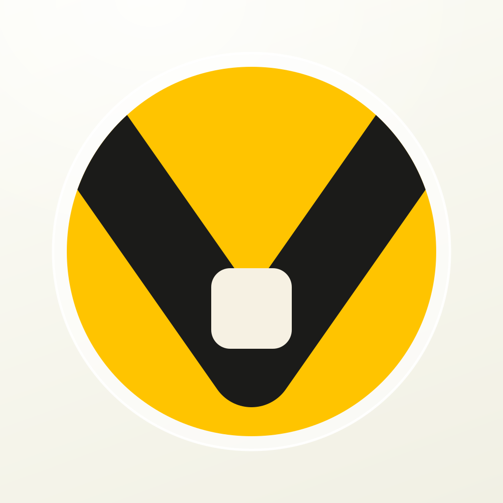

Turn 4 · Voller in vibrant yellow
Yellow can't be the subject. It has to be the field or the full stop.
The V was cream cut through green because green is a mid-dark colour that holds a light cut-out. Vibrant yellow is a light colour — a cream V on yellow is about 1.3:1, invisible. So in all three the cut-out flips to ink, and yellow takes over either the whole tile, the disc, or the field. Three directions below; the wordmark under each is the same lockup in each treatment.
4a
Full-bleed yellow
Voller
No container, no disc — the tile itself is the yellow. Loudest of the three and the only one that reads yellow at 29pt. It also drops the glass ring, which is the token tying the web back to the icons.
4b
Yellow disc, ring kept

Voller
The current mark with green swapped for yellow and the channel flipped to ink. Keeps the glass ring and the cream field, so it still sits as the parent above the four apps rather than beside them.
4c
Glyph on a pale yellow field
Voller
Follows the four app icons exactly: one upright object, no container, pale tinted field of its own hue. Sharpest of the three, and yellow survives as the full stop — which is also the gold rule stated literally.
Against the four apps
4a
4b
4c
UnJumble
Meals
UnPickle
Riverly
Three token decisions this forces
1 · Yellow replaces gold, or joins it. #FFC400 is brighter and cooler than gold #F0C21C; they're close enough that keeping both reads as an error. Say the word and gold retires.
2 · Yellow can never carry a label. Ink on yellow is 9.6:1 and fine; cream on yellow is 1.3:1 and banned. That inverts the existing green rule, where the label was ink on a filled surface either way.
3 · The green ramp stays for chrome. If yellow becomes the house colour, the four apps keep publishing their own accents and green just becomes one of them — Meal Planner's and UnPickle's. That's the model we already agreed in 1b.
Turn 4 · Meal Planner plate — two rows or three
Three rows fills the plate. Two rows survives 29pt.
4d
Two rows — shipping now
Two marks, wide gap, tick reads as a tick. The plate looks a little empty at 1024.
4e
Three rows
Reads as a list rather than a stray pair, and the plate is properly occupied. The 92px row pitch is tight at 29pt — check the small end above before choosing.
4d · two
4e · three
UnJumble
UnPickle
Riverly